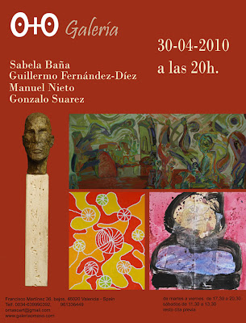
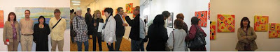
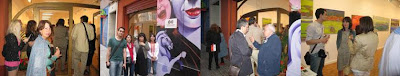

"Cadencias": Exposición del 30-04 al 30-05-2010
viernes, 30 de abril de 2010

La exposición"CADENCIAS"agrupa como si de diversos acordes musicales se tratara las obras de cuatro artistas muy diferentes. Una distribución armónica de pinturas y esculturas, que combinan en su interior ritmo, sucesión y repetición. Las distintas "cadencias" que acompañan cada obra en función de su tensión, movimiento, estabilidad, reposo, etc. hacen de la exposición colectiva un apasionante viaje melódico. En esta orquesta actúa y se combina la abstracción de las composiciones geométricas luminosas y coloristas de Sabela Baña, con la deformación figurativa y misteriosa de las mixturas de Gonzalo Suárez. La primera defiende la superficie plana y ordenada, mientras que la segunda apuesta por las densidades y texturas austeras. En este juego de contrastes es donde Guillermo Fernández-Díez esculpe la figura humana y Manuel Nieto pinta paisajes. Notas expresionistas de esculturas y pinturas que intensifican su mensaje a través del color y la forma.



{kind=link}
{kind=link}
{kind=link}
Sabela Baña
La artista gallega Sabela Baña realiza un trabajo sobre abstracción geométrica, mediante el desarrollo de varios elementos modulares de forma rítmica y colorista. Sus creaciones pictóricas se caracterizan por un orden interno configurado por la línea y el color. Estructuras armónicas en las que las figuras y el color se entrelazan formando combinaciones llenas de dinamismo. Obras creadas a partir de una línea recta o curva que se entrecruza, atraviesa, traspasa y entrelaza; dentro de una red espacial compuesta por un esqueleto cromático de gran intensidad. Una tonalidad y luminosidad que junto con el juego de la línea unifican y dotan a las pinturas de movimiento y equilibrio. Cada obra es el resultado de multitud de combinaciones e interpretaciones, cuya composición interna está ordenada y guiada por un equilibrio musical, como si de una partitura pictórica se tratara. Pinturas fruto del uso de formas geométricas simples combinadas en estructuras subjetivas sobre espacios irreales, que configuran una retícula cromática hipnótica.
Guillermo Fernández-Díez
Las esculturas de Guillermo Fernández-Díez tienen todas un mismo origen, el estudio de la cabeza de una persona creada a partir del subconsciente. Según nos acercamos su mirada penetrante comienza el diálogo con el espectador y lentamente describe al artista que hay detrás del bronce. En la escultura, todas las figuras pertenecen a recuerdos, vivencias y sentimientos que son canalizados por las manos del escultor. La idea es clara una cabeza de hombre, pero nunca existe un modelo o programación previa, dejándose llevar por el carácter particular de cada obra. Un intenso estudio que busca atrapar la singularidad del rostro, centrando una máxima atención en la cuenca de los ojos. Gran parte de la intensidad se concentra en esa zona, produciendo un marcado misterio y profundidad. La organización del espacio está lograda mediante una figura rotunda y la quietud de la pose. Una estabilidad y firmeza de la disposición del modelo y articulado del espacio que busca un equilibrio en las formas. Mientras que su factura con un nivel de acabado medio, crea un efecto de "dinamismo estático". La movilidad está creada a partir de la convulsa textura de la escultura, contornos quebradizos que hacen referencia a una vida y naturaleza escurridiza. Un mundo frágil y efímero.
Manuel Nieto
La obra pictórica de Manuel Nieto nos adentra en un mundo onírico creado a través de una pincelada expresionista. Un arte intuitivo y personal, donde predomina la visión interior del artista frente a la plasmación de la realidad. Sus paisajes están entendidos como una sutil deformación de la realidad, que buscan expresar de forma más subjetiva la naturaleza. Dando primacía a la expresión de los sentimientos por encima de la descripción objetiva de la realidad. El color y la línea son utilizados de un modo temperamental y emotivo, de fuerte contenido simbólico. Colores violentos que pretenden captar y traslucir el sustrato que subyace bajo la realidad aparente. Pinturas que reflejan lo inmutable y eterno de la naturaleza. La gestualidad del trazo y los colores vibrantes crean un mundo de fantasía y sueño con un trasfondo real que juega con el misterio. Manuel Nieto presenta una naturaleza libre a través del uso de colores puros, la exageración del dibujo y las perspectivas ligeramente forzadas. La naturaleza como gran protagonista y reflejo su mundo interior.
Gonzalo Suárez
El lenguaje artístico de Gonzalo Suárez emplea los más diversos materiales, que unidos a una estructuración ordenada, un color expresivo y libertad conceptual dotan a sus obras de una dualidad entre lo abstracto y lo figurativo. Pinturas llenas de misterio que son el resultado de un gesto espontáneo y donde se fusiona collage y reciclaje. En la mayoría de sus pinturas triunfan los espacios y contornos temblorosos en negro, que son acompañados por grises y colores pastel. Superficies estructuradas mediante manchas de color de diferentes densidades y texturas. Una magnífica síntesis constructiva, resultado de armonías austeras que fusionan la pintura con diferentes materiales y obtienen ricas y atrayentes formas. El artista se vale del poder simbólico de los materiales de deshecho utilizados en su obra para lanzar un grito emotivo de protesta hacia el mundo en el que vivimos. La magia de los elementos utilizados en la creación artística nos envuelve con sus poderosas texturas visuales, fruto de un proceso y ejecución perfectamente organizado de una riqueza extraordinaria.